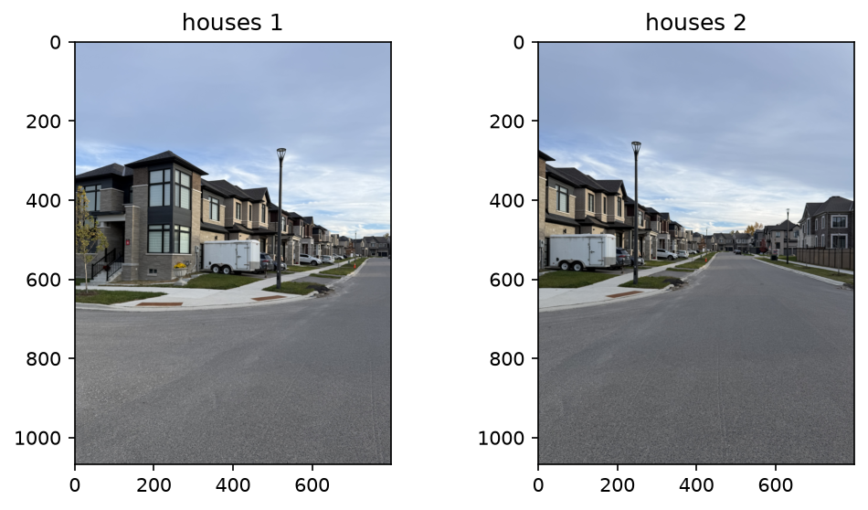
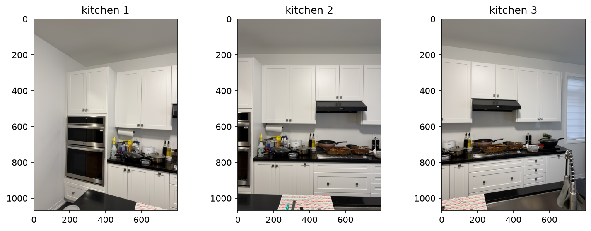
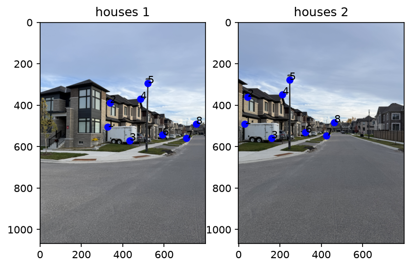
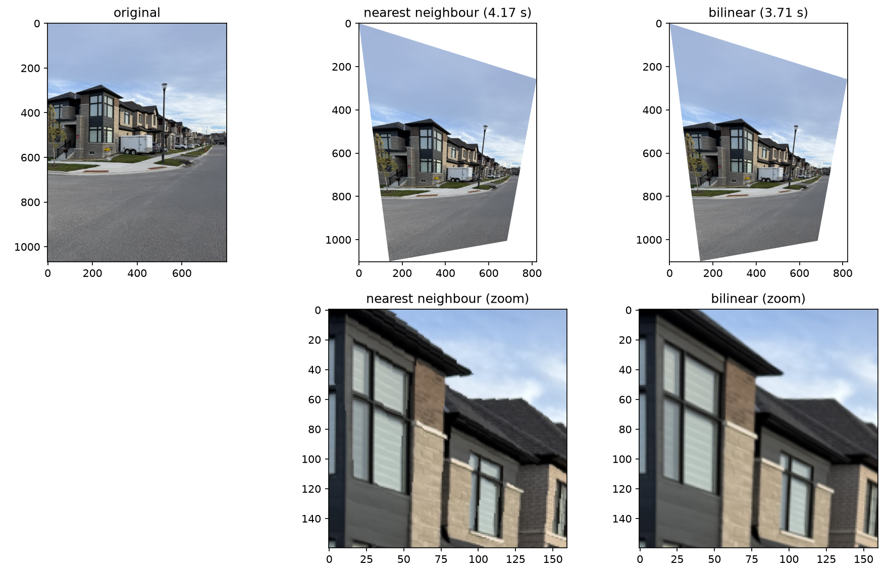
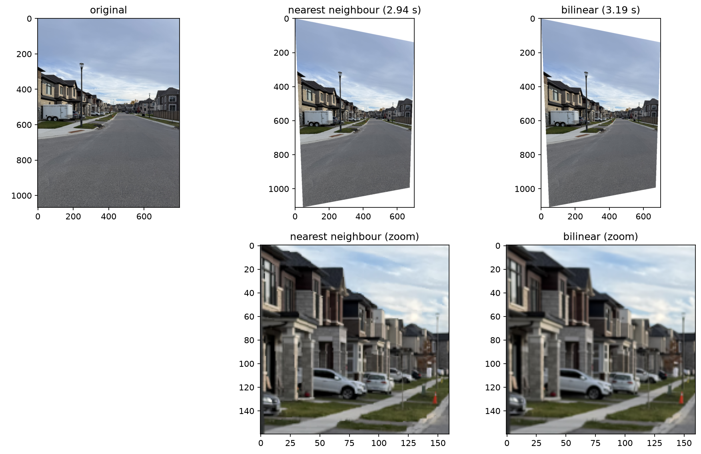
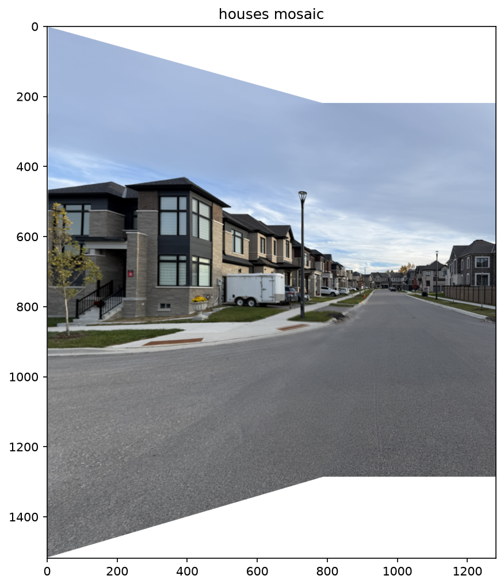

Return to Assignment 3 Overview
Both sets of images were taken from a fixed centre of projection by rotating the camera between shots. Here are my original images:


As seen in A2_A3.py file submitted to Learn dropbox:
def computeH(im1_pts,im2_pts):
a = []
b = []
# adding 2 equations to the system of equations
for (x, y), (xp, yp) in zip(im1_pts, im2_pts):
# LHS matrix coefficients
a.append([x, y, 1, 0, 0, 0, -xp * x, -xp * y])
a.append([0, 0, 0, x, y, 1, -yp * x, -yp * y])
# RHS matrix
b.append(xp)
b.append(yp)
a = np.array(a)
b = np.array(b)
# 16 equations, 8 unknowns, using least squares
h = np.linalg.lstsq(a, b, rcond=None)[0]
# using 1 as scaling factor
H = np.append(h, 1)
# reshaping homography back to 3x3 matrix size
H = H.reshape(3, 3)
return H, a, b
A =
[[ 326.57 504.96 1. 0. 0. 0. -9810.15 -15169.07]
[ 0. 0. 0. 326.57 504.96 1. -160202.64 -247715.38]
[ 338.08 388.84 1. 0. 0. 0. -14698.19 -16905. ]
[ 0. 0. 0. 338.08 388.84 1. -121403.95 -139631.67]
[ 433.09 570.21 1. 0. 0. 0. -68701.23 -90453.94]
[ 0. 0. 0. 433.09 570.21 1. -242381.05 -319125.6 ]
[ 484.91 370.61 1. 0. 0. 0. -102980.31 -78706.9 ]
[ 0. 0. 0. 484.91 370.61 1. -169009.1 -129172.1 ]
[ 521.37 293.84 1. 0. 0. 0. -128236.18 -72272.26]
[ 0. 0. 0. 521.37 293.84 1. -144694.63 -81548.03]
[ 592.39 543.34 1. 0. 0. 0. -191748.96 -175874.63]
[ 0. 0. 0. 592.39 543.34 1. -314480.16 -288445.28]
[ 707.54 559.66 1. 0. 0. 0. -299638.08 -237010.36]
[ 0. 0. 0. 707.54 559.66 1. -386476.89 -305698.88]
[ 754.57 490.56 1. 0. 0. 0. -349239.96 -227051.08]
[ 0. 0. 0. 754.57 490.56 1. -364370.38 -236887.81]]
b =
[ 30.04 490.56 43.48 359.09 158.63 559.66 212.37 348.54 245.96 277.53 323.69 530.87 423.49 546.22 462.84 482.89]H =
[[ 1.551615e+00 1.785683e-02 -4.784131e+02]
[ 3.709740e-01 1.364437e+00 -2.181158e+02]
[ 7.135134e-04 -4.400863e-05 1.000000e+00]]As seen in A2_A3.py file submitted to Learn dropbox:
def inverse_map(image, H):
xmin, ymin, xmax, ymax = bounding_box(image, H)
# grid of output pixel coordinates
xs = np.meshgrid(np.arange(xmin, xmax + 1), np.arange(ymin, ymax + 1))[0]
ys = np.meshgrid(np.arange(xmin, xmax + 1), np.arange(ymin, ymax + 1))[1]
out_pts = np.stack([xs.ravel(), ys.ravel()], axis=1)
# inverse homography goes from output back to original
src = transform(out_pts, np.linalg.inv(H))
src_x, src_y = src.T
return src_x.reshape(xs.shape), src_y.reshape(xs.shape)
def warpImageNearestNeighbor(image, H):
height, width, channels = image.shape
src_x, src_y = inverse_map(image, H)
# round to the nearest pixel center
x = np.round(src_x).astype(int)
y = np.round(src_y).astype(int)
# only keeping output pixels that land inside the source image
insideleft = x >= 0
insideright = x <= width - 1
insidetop = y >= 0
insidebottom = y <= height - 1
valid = (insideleft & insideright & insidetop & insidebottom)
# output with an alpha channel, everything transparent to start
out = np.zeros(src_x.shape + (channels + 1,))
out[valid, :channels] = image[y[valid], x[valid]]
out[valid, channels] = 1
return outdef warpImageBilinear(image, H):
height, width, channels = image.shape
src_x, src_y = inverse_map(image, H)
# only keeping output pixels that land inside the source image
insideleft = src_x >= 0
insideright = src_x <= width - 1
insidetop = src_y >= 0
insidebottom = src_y <= height - 1
valid = (insideleft & insideright & insidetop & insidebottom)
x = src_x[valid]
y = src_y[valid]
# top left neighbour clipped so the bottom right neighbour stays inside the image
x0 = np.clip(np.floor(x).astype(int), 0, width - 2)
y0 = np.clip(np.floor(y).astype(int), 0, height - 2)
x1 = x0 + 1
y1 = y0 + 1
# fractional distance from the top left neighbour with an axis added to weight all colour channels
dx = np.expand_dims(x - x0, axis=1)
dy = np.expand_dims(y - y0, axis=1)
# four neighbouring pixels
topleft = image[y0, x0]
topright = image[y0, x1]
bottomleft = image[y1, x0]
bottomright = image[y1, x1]
# weights
weight_l = 1 - dx
weight_r = dx
weight_t = 1 - dy
weight_b = dy
# combining weights andn blending
top = weight_l * topleft + weight_r * topright
bottom = weight_l * bottomleft + weight_r* bottomright
blended = weight_t * top + weight_b * bottom
# size of the output image
height = src_x.shape[0]
width = src_x.shape[1]
# colour image, black to start
rgb = np.zeros((height, width, channels))
# putting the blended colours into the pixels that have data
rgb[valid] = blended
# alpha channel
alpha = valid.astype(float)
# stacking colour and alpha
return np.dstack([rgb, alpha])

H (houses1 rectification) =
[[ 1.532454e+00 1.616403e-01 -9.107441e+01]
[ 3.887635e-01 1.602668e+00 -1.626164e+02]
[ 6.947046e-04 6.094603e-04 1.000000e+00]]
H (houses2 rectification) =
[[ 1.142715e+00 4.665246e-02 -2.487267e+01]
[ 2.084963e-01 1.169052e+00 -5.353969e+01]
[ 3.957223e-04 1.234901e-04 1.000000e+00]]| Image | Nearest Neighbour | Bilinear |
|---|---|---|
| Houses1 | 4.17 seconds | 3.71 seconds |
| Houses2 | 2.94 seconds | 3.19 seconds |
The zoomed crops come from the centre of each warped image. In houses1, the crop lands on the second floor windows and roofline of the corner townhouse. With nearest neighbour, the diagonal edges of the roof break into stair steps, and the window frames and the white trim below the windows have jagged edges. With bilinear, the same roofline is a clean diagonal and the trim is smooth, but the brick on the wall is a little softer. In houses2, the crop lands on the row of houses farther down the street, with the parked cars and the sidewalk. The difference is much smaller here. Nearest neighbour roughens the edge of the sidewalk and the outlines of the cars, but the two crops look almost the same. This matches how much each photo is warped. Houses1 turns into a trapezoid, while the houses2 output stays close to its original rectangle, so there is less distortion for nearest neighbour to show.
In theory, nearest neighbour should be faster because it does one lookup per pixel, while bilinear does four lookups plus the weighting. My timings don't show that though. Nearest neighbour was actually slower on houses1 (4.17 vs. 3.71 seconds) and faster on houses2 (2.94 vs. 3.19 seconds). Both methods share inverse_map, and its transform function loops over every output pixel one at a time in interpreted Python. That loop takes up almost all of the run time, while the interpolation itself is vectorized NumPy, so the gap between the two methods gets lost in run to run variation. What does change the run time is the size of the output. The houses1 output is about 820 x 1100 pixels while houses2 is about 700 x 1100, so houses1 has more pixels to loop over, and both of its times are higher than both of the houses2 times which makes sense.
Here is a breakdown of the steps I took to make the houses mosaic:
I left houses2 unwarped by giving it the identity matrix np.eye(3), so the view straight down the street keeps its original shape, and warped houses1 into its projection with the homography from A.2.
I found the bounding box of every warped image and took the overall minimum and maximum to get the size of the final canvas, so all the images can be warped in one shot.
For each image, I made a weight that is 1 at the centre and falls off linearly to close to 0 at the edges, separately along x and y, and combined them into a 2D weight map with np.outer. I added the weight as an extra channel with np.dstack so it gets warped with the same bilinear warp as the colours, which means each weight lands exactly where its pixel lands.
I added each warped image onto the canvas at its offset with np.ix_, keeping a running sum of colour * weight and a running sum of the weights. Dividing the two gives me the feathered average. None of the image edges show up as a line in the sky or on the road. Plus, the lamp post that sits inside the overlap appears only once, so the 8 correspondences lined the two photos up well.
